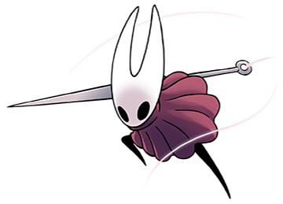
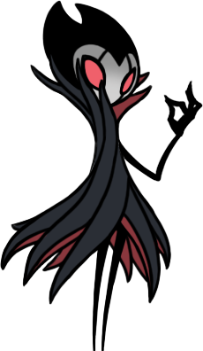

-
O Cavaleiro
HP 600

Descrição
O Cavaleiro é um Receptáculo nascido dos seres superiores: Rei Pálido e Dama Branca, com Vazio dentro de sua carapaça.
-
Hornet
HP 800
Descrição
Criado no Ninho Profundo pelos tecelões, Hornet sobreviveu à infecção e à queda do reino. Ela vagueia por suas ruínas, perseguindo viajantes que tentariam profaná-las, mas também para proteger o lacre do Ovo Negro.
-
Grimm
HP 1400
Descrição
Grimm e sua trupe viajam do reino do pesadelo para onde quer que a lanterna do pesadelo tenha sido acesa por acólitos. Eles juntam Chamas do Pesadelo de terras arruinadas para alimentar o sinistro ser escravizador da Trupe, o Coração do Pesadelo.